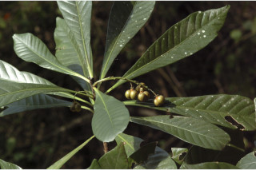
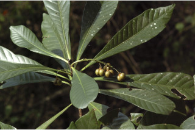
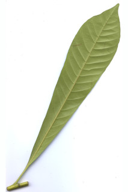
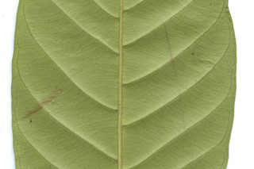
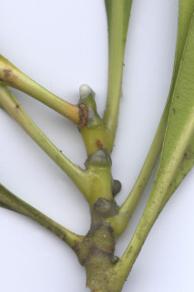
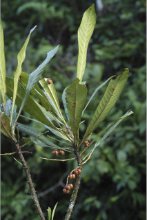
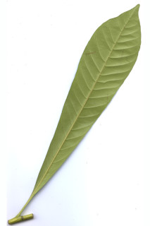
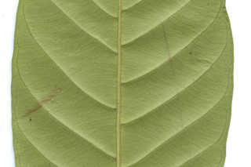
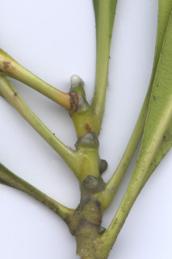
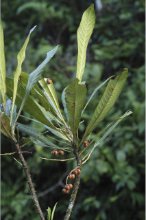

Trees up to 15 m tall.
15 ಮೀ. ಎತ್ತರದವರೆವಿಗೆ ಬೆಳೆಯುವ ಮರಗಳು
15 മീറ്റര് വരെ ഉയരമുളള മരങ്ങള്.
மரங்கள், 15 மீ. உயரம் வரை வளரக்கூடியது
Bark smooth, brownish grey; blaze light orange.
ತೊಗಟೆ ಬೂದು ಮಿಶ್ರಿತ ಕಂದು ಬಣ್ಣ ಹೊಂದಿದ್ದು ನಯವಾಗಿರುತ್ತದೆ; ಕಚ್ಚು ಮಾಡಿದ ಜಾಗ ಕಿತ್ತಳೆ ಬಣ್ಣದಲ್ಲಿರುತ್ತದೆ.
മിനുസമുളള തവിട്ട്കലര്ന്ന ചാരനിറത്തിലുളള പുറംതൊലി; വെട്ട്പാടിന് ഇളം ഓറഞ്ച് നിറമാണ്.
மரத்தின் பட்டை வழுவழுப்பானது, ப்ரவுன் கலந்த சாம்பல் நிறமானது; உள்பட்டை வெளிறிய ஆரஞ்சு நிறமானது.
Branchlets stout with scars of fallen leaves and stipules, glabrous.
ಕಿರುಕೊಂಬೆಗಳು ದೃಢವಾಗಿದ್ದು ಎಲೆ ಮತ್ತು ಕಾವಿನೆಲೆಗಳ ಉದುರಿದ ಗುರುತುಗಳ ಸಮೇತವಿರುತ್ತವೆ ಹಾಗೂ ರೋಮರಹಿತವಾಗಿರುತ್ತವೆ.
ഇലകളുടെയും അനുപര്ണ്ണങ്ങളുടെയും അടയാളങ്ങളുളള, അരോമിലവും, ദൃഢവുമായ ഉപശാഖകള്.
சிறிய நுனிக்கிளைகள் தடித்தது, இலைகள் மற்றும் இலையடிச்செதில் உதிருவதனால் ஏற்படும் தழும்புகளுடையது, உரோமங்களற்றது.
Apical buds exudes yellowish resin.
ತುದಿಯಲ್ಲಿನ ಕುಡಿ ಮೊಗ್ಗುಗಳು ಹಳದಿ ಅಂಟು ದ್ರವವನ್ನು ಸ್ರವಿಸುತ್ತವೆ.
കൊഴുത്ത മഞ്ഞനിറത്തിലുളള സ്രവമൂറുന്ന അഗ്രമുകുളങ്ങള്.
தண்டின் நுனியில் காணப்படும் மொட்டு மஞ்சள் நிறமான பிசின் (ரெசின்) சுரக்க கூடியது.
Leaves simple, alternate, spiral, clustered at twig ends; stipules ovate, caducous; petiole 1-2.5 cm long, planoconvex in cross section; lamina 12-26 (-50) x 3-7.5 cm, long oblanceolate, apex bluntly acuminate, base cuneate and decurrent, margin entire, coriaceous, drying brownish; midrib stout, distinctly raised on both surface; secondary_nerves 12-18 pairs, impressed above; tertiary_nerves slender and closely_horizontally_percurrent.
ಎಲೆಗಳು ಸರಳವಾಗಿದ್ದು, ಪರ್ಯಾಯ ಮತ್ತು ಸುತ್ತು ಜೋಡನಾ ಮಾದರಿಯಲ್ಲಿರುತ್ತವೆ ಮತ್ತು ಕುಡಿಕೊಂಬೆಗಳ ತುದಿಯಲ್ಲಿ ಗುಂಪಾಗಿರುತ್ತವೆ;ಕಾವಿನೆಲೆಗಳು ಅಂಡಾಕಾರದಲ್ಲಿದ್ದು ಉದುರಿ ಹೋಗುವಂತಹವು ;ತೊಟ್ಟುಗಳು1 - 2.5 ಸೆಂ.ಮೀ. ಉದ್ದವಿದ್ದು, ಅಡ್ಡ ಸೀಳಿದಾಗ ಸಪಾಟಪೀನ ಮಧ್ಯದ ಆಕಾರದಲ್ಲಿರುತ್ತವೆ;ಪತ್ರಗಳು 12 – 26(-50) X 3 – 7. 5 ಸೆಂ ಮೀ. ವರೆಗಿನ ಗಾತ್ರ, ಬುಗುರಿ-ಭರ್ಜಿ ಮಾದರಿಯ ಆಕಾರ,ಮೊಂಡಾದ ಅಗ್ರವುಳ್ಳ ಕ್ರಮೇಣ ಚೂಪಾಗುವ ತುದಿ, ಬೆಣೆಯಾಕಾರದ ಮತ್ತು ತಳಭಾಗಕ್ಕೆ ವಿಸ್ತರಿಸಿದ ಬುಡ, ನಯವಾದ ಅಂಚು, ತೊಗಲನ್ನೋಲುವ ಮೇಲ್ಮೈ ಸಮೇತವಿದ್ದು ಒಣಗಿದಾಗ ಕಂದು ಬಣ್ಣದಲ್ಲಿರುತ್ತವೆ ; ಮಧ್ಯನಾಳ ದೃಢವಾಗಿರುತ್ತದೆ ಹಾಗೂ ಪತ್ರದ ಎರಡೂ ಬದಿಯಲ್ಲಿ ಮೇಲೆದ್ದಿರುತ್ತದೆ; ಎರಡನೇ ದರ್ಜೆಯ ನಾಳಗಳು 12 ರಿಂದ 18 ಜೋಡಿಗಳಿರುತ್ತವೆ ಹಾಗೂ ಪತ್ರದ ಮೇಲ್ಭಾಗದಲ್ಲಿ ಅಚ್ಚೊತ್ತಿದಂತಿರುತ್ತವೆ; ಮೂರನೇ ದರ್ಜೆಯ ನಾಳಗಳು ತೆಳುವಾಗಿರುತ್ತವೆ ಹಾಗೂ ಹತ್ತಿರದ ಅಂತರ ಹೊಂದಿದ್ದು ಲಂಬ ರೇಖೆಗೆ ಸಮಕೋನದಲ್ಲಿದ್ದು ಎಲೆದಿಂಡಿಗೆ ಅಡ್ಡವಾಗಿ ಕೂಡುವಂತವು.
ലഘുവായ ഇലകള്, ഏകാന്തരക്രമത്തില്, സര്പ്പിളമായി, തണ്ടുകളുടെ അറ്റത്ത് കൂട്ടമായടുക്കിയ വിധത്തിലാണ്; എളുപ്പം ഇളകിപ്പോകുന്ന, അണ്ഡാകാര, അനുപര്ണ്ണങ്ങള്; ഛേദത്തില്, ഒരു ഭാഗം പരന്നും മറുഭാഗം ഉയര്ന്നുമുളള ഘടനയുളള ഇലഞെട്ടിന് 1 സെ.മീ മുതല് 2.5 സെ.മീ വരെ നീളം; പത്രഫലകത്തിന് 12 സെ.മീ മുതല് 26 സെ.മീ (50 സെ.മീ വരെ) നീളവും 3 സെ.മീ മുതല് 7.5 സെ.മീ വരെ വീതിയും, നീളമേറിയ അപകുന്താകൃതിയുമാണ്, മുനപ്പില്ലാത്ത ദീര്ഘാഗ്രവും, പത്രാധാരം ആപ്പാകാരത്തില് കീഴേക്കിറങ്ങി നില്ക്കുന്നതും ആണ്, അവിഭജിതമായ അരികുകള്, ചര്മ്മില പ്രകൃതം, ഉണങ്ങുമ്പോള് തവിട്ട് നിറം; ദൃഢമായ മുഖ്യസിര രണ്ട്ഭാഗത്തും വ്യക്തമായും ഉയര്ന്ന് നില്ക്കുന്നതാണ്; മുകളില് മുദ്രിതമായ 12 മുതല് 18 വരെ ജോഡി ദ്വിതീയ ഞരമ്പുകള്; അടുത്ത തിരശ്ചീന പെര്കറന്റ് വിധത്തിലുളള നേര്ത്ത ത്രിതീയ ഞരമ്പുകള്.
இலைகள் தனித்தவை, மாற்றுஅடுக்கமானவை, சுழல் போன்று அமைந்தவை; சிறுகிளைகளின் நுனியில் இலைகள் கூட்டமாக மற்றும் நெருக்கமாக காணப்படும்; இலையடிச்செதில் முட்டை வடிவானது, எளிதில் உதிரக்கூடியது; இலைக்காம்பு 1-2.5 செ.மீ. வரை நீளமானது, குறுக்குவெட்டுத் தோற்றத்தில் பிளேனோகான்வக்ஸ்; இலை அலகு 12-26 (-50) X 3-7.5 செ.மீ. நீண்ட தலைகீழ் ஈட்டி வடிவானது, அலகின் நுனி மழுங்கிய அதிக்கூரியது, அலகின் தளம் ஆப்பு மற்றும் டெக்கரண்ட் வடிவானது, அலகின் விளிம்பு முழுமையானது, கோரியேசியஸ், உலரும் போது ப்ரவுன் நிறமடைகிறது; மையநரம்பு தடித்தது, அலகின் இருபுறமும் அலகின் பரப்பைவிட மேலெழும்பியது; இரண்டாம் நிலை நரம்புகள் 12-18 ஜோடிகள், அலகின் மேற்பரப்பில் அலகின் பரப்பைவிட சற்று அழுந்தியவை; மூன்றாம் நிலை நரம்புகள் மெல்லியது மற்றும் நெருக்கமானது, நேரான பெர்க்கரண்ட்.
Inflorescence axillary spikes; flowers unisexual, dioecious; male flowers sessile, 3-5 together within a bract; female flowers solitary within a bract.
ಪುಷ್ಪಮಂಜರಿಗಳು ಅಕ್ಷಾಕಂಕುಳಿನಲ್ಲಿನ ಕದಿರು ಮಂಜರಿ ಮಾದರಿಯವು; ಹೂಗಳು ಏಕಲಿಂಗಿಗಳು;ಗಂಡು ಮತ್ತು ಹೆಣ್ಣು ಹೂಗಳು ಪ್ರತ್ಯೇಕ ಸಸ್ಯಗಳಲ್ಲಿರುತ್ತವೆ; ಗಂಡು ಹೂಗಳು ತೊಟ್ಟುರಹಿತವಾಗಿದ್ದು 3 ರಿಂದ 5 ಹೂಗಳು ಒಟ್ಟಿಗೆ ಪತ್ರಕಗಳ ಒಳಗಿರುತ್ತವೆ;ಹೆಣ್ಣು ಹೂಗಳು ಪತ್ರಕಗಳ ಒಳಗೆ ಒಂಟಿಯಾಗಿರುತ್ತವೆ.
പൂങ്കുലകള് കക്ഷീയ സൈപക്കുകളാണ്; പൂക്കള് ഏകലിംഗികളാണ് ഡയീഷ്യസും; അവൃന്തമായ ആണ്പക്കൂള്; 3 മുതല് 5 വരെയെണ്ണം ഒന്നിച്ച് ഒരു സഹപത്രത്തിനകത്ത് ഉണ്ടാകുന്നു; പെണ്പൂക്കള്, സഹപത്രത്തിനകത്ത് ഒറ്റക്കുണ്ടാകുന്നു.
மஞ்சரிகள் இலைக்கோணங்களில் காணப்படும் ஸ்பைக்; மலர்கள் ஓர்பாலானவை, ஈரகம் கொண்டவை; ஆண்மலர்கள் காம்பற்றவை, 3-5 மலர்கள் கூட்டமாக ஓர் மலரடிச்செதிலுடன் காணப்படும்; பெண்மலர்கள் தனித்து ஓர் மலரடிச்செதிலுடன் காணப்படும்.
Capsule, trilocular, to 1 cm across; seeds 1 per locule.
ಸಂಪುಟ ಫಲಗಳು 1 ಸೆಂ.ಮೀ ವ್ಯಾಸ ಹೊಂದಿದ್ದು 3 ಹಾಲೆಗಳನ್ನೊಳಗೊಂಡಿರುತ್ತವೆ; ಪ್ರತಿ ಕೋಶದಲ್ಲಿ 1 ಬೀಜ ಇರುತ್ತದೆ.
ഓരോഭാഗത്തും ഒരു വിത്തുവീതമുളള കായ, 1 സെ.മീ വരെ കുറുകേയുളള, 3 ഭാഗങ്ങളുളള കാപ്സ്യൂള് ആണ്.
வெடிகனி (கேப்சூல்), 3 அறைகளுடையது, 1 செ.மீ. குறுக்களவுடையது; ஒர் அறையில் 1 விதையுடையது.


 

 






